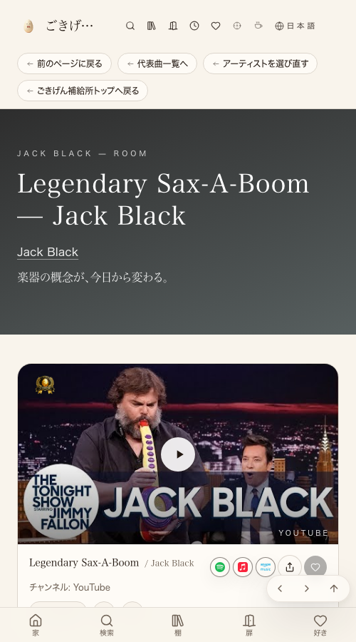
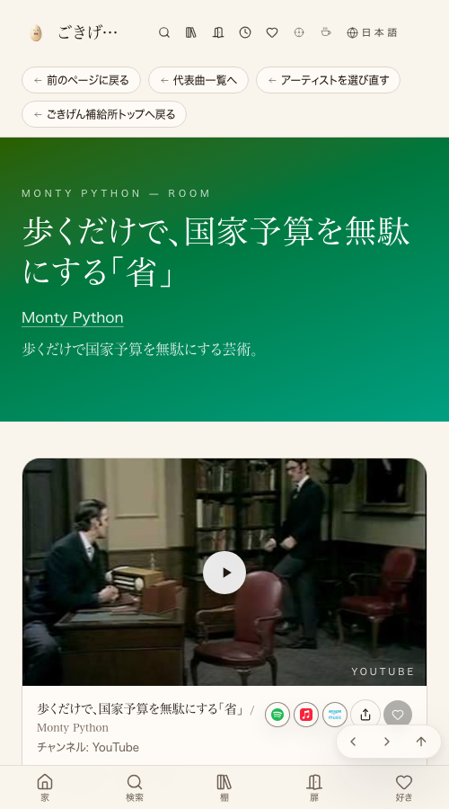

Legendary Sax-A-Boom→「サックスを持ったら、伝説になった」。


| 確認項目 | 結果 |
|---|---|
| jack-black-sax（107M再生） | Legendary Sax-A-Boom → サックスを持ったら、伝説になった |
| monty-python-silly-walks（5.8M再生） | Ministry of Silly Walks → 歩くだけで、国家予算を無駄にする「省」 |
| film-move | MOVE / Rick Mereki → 世界中を、歩いて走って飛び跳ねた1分 |
| film-eat | EAT / Rick Mereki → 11カ国ぶんの「いただきます」を、1分に |
| film-learn | LEARN / Rick Mereki → 知らない土地で、初めてを教わり続けた1分 |